import pandas as pd
import numpy as np
import matplotlib.pyplot as plt
import seaborn as sns
from sklearn.model_selection import train_test_split
from sklearn.metrics import mean_squared_error, r2_score
from sklearn.preprocessing import LabelEncoderTutorial 7 - Métodos de Regressão
Carregando os pacotes
Lendo os dados
minha_palette = ["#ffbe0b", "#3a86ff","#fb5607","#8338ec", "#ff006e"]
# Configuração estética padrão
sns.set_style("dark")
sns.set_palette(minha_palette)Usaremos dados do Ikea, uma loja de móveis com filiais em várias partes do mundo.
O próposito é prever o preço dos móveis vendidos na IKEA a partir de várias características destes produtos como a categoria e o tamanho do móvel, conforme aqui.
Vamos carregar os dados e ver as primeiras linhas.
df = pd.read_csv('https://raw.githubusercontent.com/rfordatascience/tidytuesday/master/data/2020/2020-11-03/ikea.csv')
df.info()<class 'pandas.DataFrame'>
RangeIndex: 3694 entries, 0 to 3693
Data columns (total 14 columns):
# Column Non-Null Count Dtype
--- ------ -------------- -----
0 Unnamed: 0 3694 non-null int64
1 item_id 3694 non-null int64
2 name 3694 non-null str
3 category 3694 non-null str
4 price 3694 non-null float64
5 old_price 3694 non-null str
6 sellable_online 3694 non-null bool
7 link 3694 non-null str
8 other_colors 3694 non-null str
9 short_description 3694 non-null str
10 designer 3694 non-null str
11 depth 2231 non-null float64
12 height 2706 non-null float64
13 width 3105 non-null float64
dtypes: bool(1), float64(4), int64(2), str(7)
memory usage: 1.0 MBdf.head()| Unnamed: 0 | item_id | name | category | price | old_price | sellable_online | link | other_colors | short_description | designer | depth | height | width | |
|---|---|---|---|---|---|---|---|---|---|---|---|---|---|---|
| 0 | 0 | 90420332 | FREKVENS | Bar furniture | 265.0 | No old price | True | https://www.ikea.com/sa/en/p/frekvens-bar-tabl... | No | Bar table, in/outdoor, 51x51 cm | Nicholai Wiig Hansen | NaN | 99.0 | 51.0 |
| 1 | 1 | 368814 | NORDVIKEN | Bar furniture | 995.0 | No old price | False | https://www.ikea.com/sa/en/p/nordviken-bar-tab... | No | Bar table, 140x80 cm | Francis Cayouette | NaN | 105.0 | 80.0 |
| 2 | 2 | 9333523 | NORDVIKEN / NORDVIKEN | Bar furniture | 2095.0 | No old price | False | https://www.ikea.com/sa/en/p/nordviken-nordvik... | No | Bar table and 4 bar stools | Francis Cayouette | NaN | NaN | NaN |
| 3 | 3 | 80155205 | STIG | Bar furniture | 69.0 | No old price | True | https://www.ikea.com/sa/en/p/stig-bar-stool-wi... | Yes | Bar stool with backrest, 74 cm | Henrik Preutz | 50.0 | 100.0 | 60.0 |
| 4 | 4 | 30180504 | NORBERG | Bar furniture | 225.0 | No old price | True | https://www.ikea.com/sa/en/p/norberg-wall-moun... | No | Wall-mounted drop-leaf table, ... | Marcus Arvonen | 60.0 | 43.0 | 74.0 |
Limpeza dos dados
Também vamos fazer uma revisão geral dos dados.
Conforme visto no output do info() há várias colunas em formato de string e algumas colunas que apenas são um id de cada linha, além de termos valores NULL. Precisamos limpar o dataset para deixá-lo mais adequado ao modelo de machine learning.
ikea = df[['price','category','sellable_online','depth','height','width']].dropna()
ikea['category'] = ikea['category'].astype('category')
ikea.info()<class 'pandas.DataFrame'>
Index: 1899 entries, 3 to 3688
Data columns (total 6 columns):
# Column Non-Null Count Dtype
--- ------ -------------- -----
0 price 1899 non-null float64
1 category 1899 non-null category
2 sellable_online 1899 non-null bool
3 depth 1899 non-null float64
4 height 1899 non-null float64
5 width 1899 non-null float64
dtypes: bool(1), category(1), float64(4)
memory usage: 78.3 KBAnálise Exploratória de Dados
Análise de Correlação.
import matplotlib.colors as mcolors
num_cols = ikea.select_dtypes(include=['int64', 'float64'])
corr_matrix = num_cols.corr()
# 1. Transforma a sua lista de cores em um mapa de cores contínuo
meu_cmap = mcolors.LinearSegmentedColormap.from_list("dois_tons", minha_palette[:2])
sns.heatmap(corr_matrix, annot=True, cmap=meu_cmap)
plt.title('Heatmap de Correlações')
plt.show()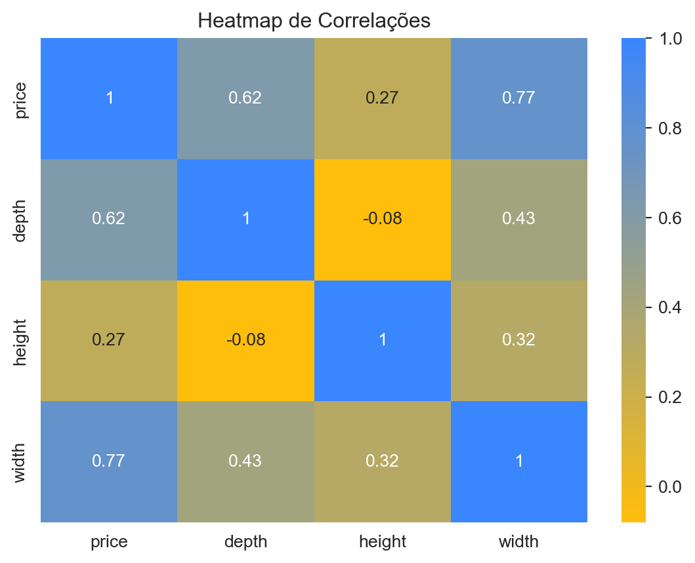
Gráficos de Dispersão com o preço
sns.scatterplot(data=ikea, x='depth', y='price', color=minha_palette[0])
plt.show()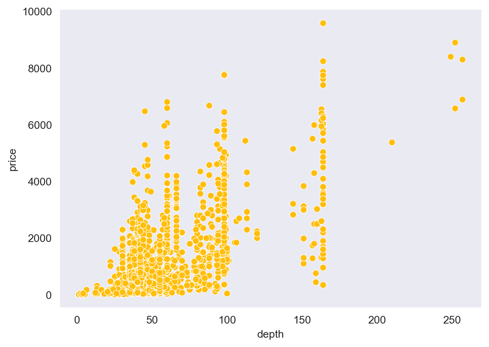
sns.scatterplot(data=ikea, x='width', y='price', color=minha_palette[1])
plt.show()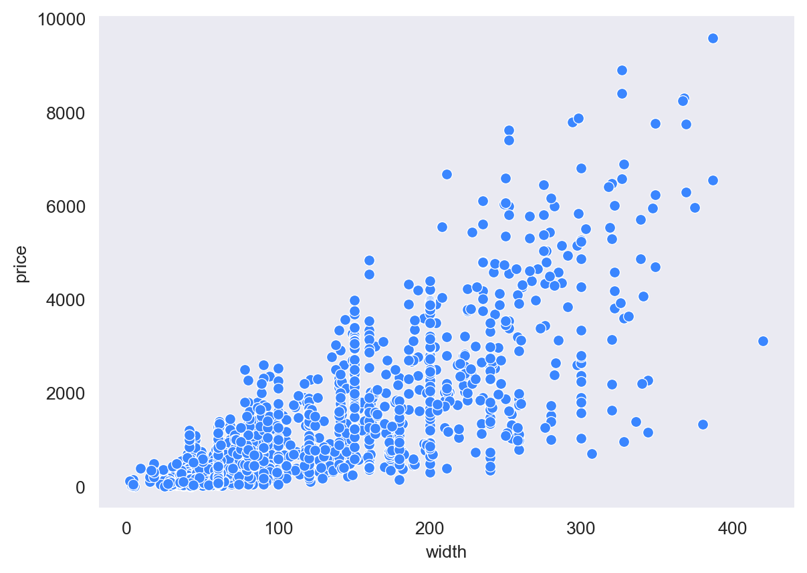
sns.scatterplot(data=ikea, x='height', y='price',color=minha_palette[2])
plt.show()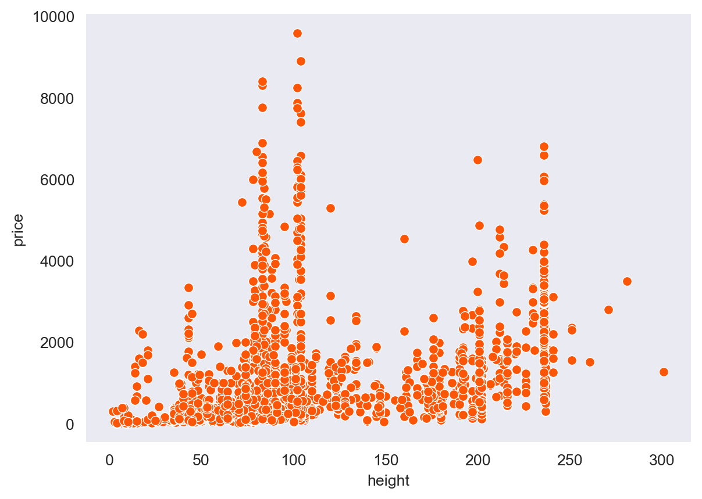
sns.scatterplot(data=ikea, x='sellable_online', y='price', hue='sellable_online')
plt.show()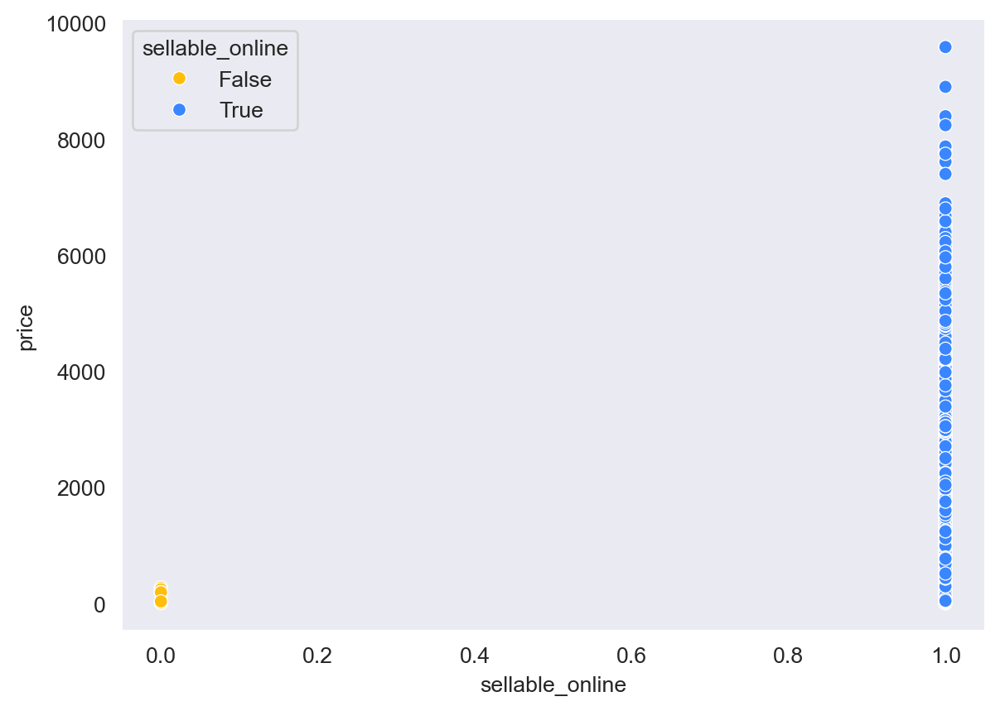
como praticamente todos os produtos se vendem online, vamos eliminar essa coluna.
counts = ikea['sellable_online'].value_counts()
sns.countplot(x='sellable_online', data=ikea, hue='sellable_online')
plt.show()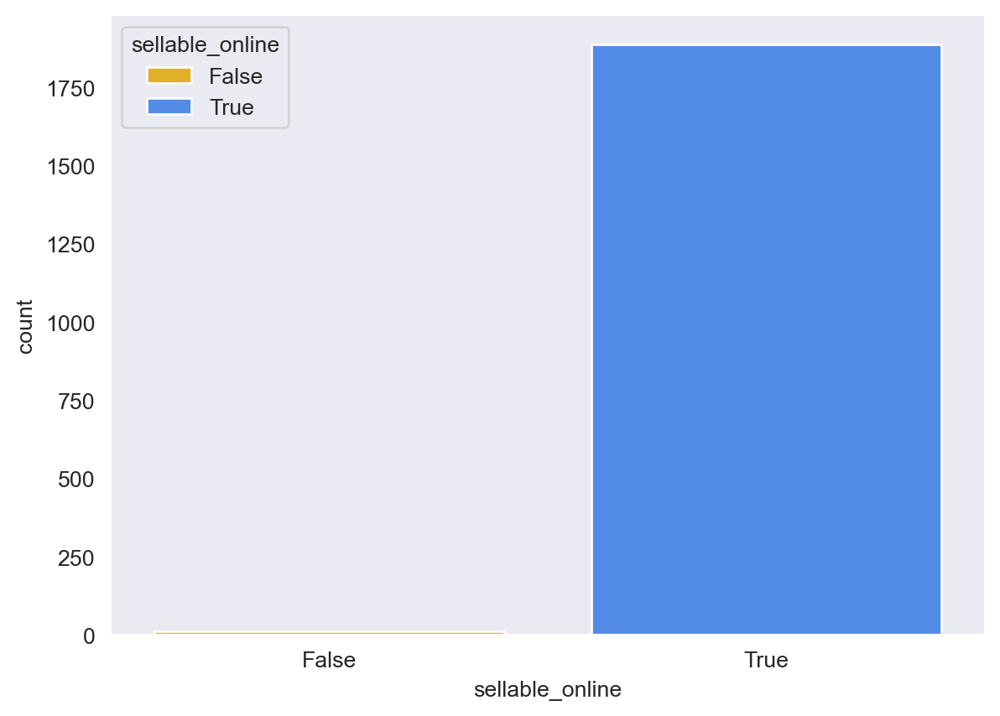
ikea = ikea.drop(['sellable_online'], axis=1)
ikea.head()| price | category | depth | height | width | |
|---|---|---|---|---|---|
| 3 | 69.0 | Bar furniture | 50.0 | 100.0 | 60.0 |
| 4 | 225.0 | Bar furniture | 60.0 | 43.0 | 74.0 |
| 5 | 345.0 | Bar furniture | 45.0 | 91.0 | 40.0 |
| 6 | 129.0 | Bar furniture | 44.0 | 95.0 | 50.0 |
| 8 | 129.0 | Bar furniture | 44.0 | 95.0 | 50.0 |
Vamos ver o preço:
sns.histplot(data=ikea, x='price',
bins=30, color=minha_palette[1])
plt.xlabel('Preço')
plt.show()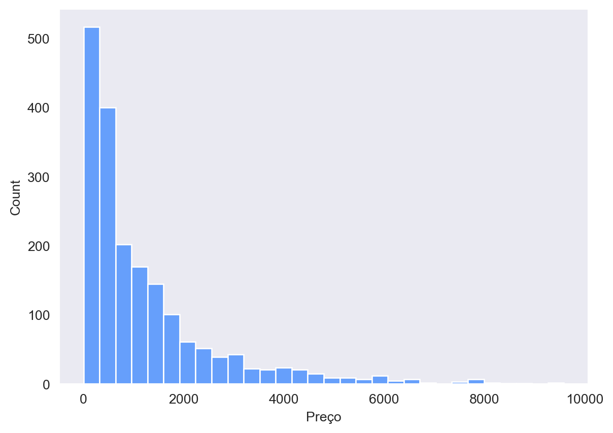
Como o preço está muito agregaado aos valores mais baixos, é necessário transformar a coluna, p.ex. utilizando log10.
ikea['log_price'] = np.log10(ikea['price'])
ikea = ikea.drop(['price'], axis=1)
ikea.head()| category | depth | height | width | log_price | |
|---|---|---|---|---|---|
| 3 | Bar furniture | 50.0 | 100.0 | 60.0 | 1.838849 |
| 4 | Bar furniture | 60.0 | 43.0 | 74.0 | 2.352183 |
| 5 | Bar furniture | 45.0 | 91.0 | 40.0 | 2.537819 |
| 6 | Bar furniture | 44.0 | 95.0 | 50.0 | 2.110590 |
| 8 | Bar furniture | 44.0 | 95.0 | 50.0 | 2.110590 |
sns.histplot(data=ikea, x='log_price',
bins=30, color=minha_palette[3])
plt.xlabel('Log10 Preço')
plt.show()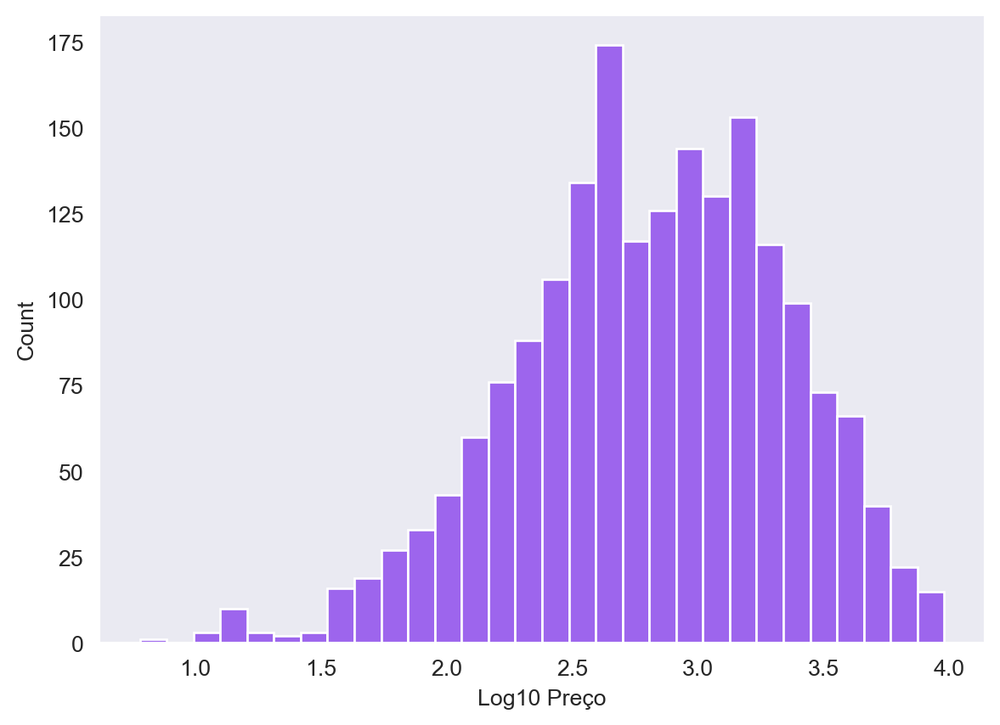
Antes de iniciar a modelagem, precisamos codificar a(s) coluna(s) categóricas, neste caso, temos uma única coluna, chamada category.
label_encoder = LabelEncoder()
ikea['category_encoded'] = label_encoder.fit_transform(ikea['category'])ikea = ikea.drop('category', axis=1)Modelagem Supervisionada
Vamos dividir o dataset em treino e teste:
X = ikea.drop('log_price', axis=1) # Features
y = ikea['log_price'] # Target variable
X_train, X_test, y_train, y_test = train_test_split(X, y, test_size=0.2, random_state=42) Árvores de Decisão (Decision Trees)
Vamos treinar o modelo de árvore de decisão.
from sklearn.tree import DecisionTreeRegressortree_model = DecisionTreeRegressor(random_state=42)
tree_model.fit(X_train, y_train)DecisionTreeRegressor(random_state=42)In a Jupyter environment, please rerun this cell to show the HTML representation or trust the notebook.
On GitHub, the HTML representation is unable to render, please try loading this page with nbviewer.org.
Parameters
Vamos criar uma nova coluna com os resultados da predição:
y_pred = tree_model.predict(X_test)Por fim, vamos avaliar o modelo de árvore que treinamos, para isso vamos usar os dados de teste.
mse_tree = mean_squared_error(y_test, y_pred)
r2_tree = r2_score(y_test, y_pred)
rmse_tree = np.sqrt(mse_tree)
print(f'Mean Squared Error: {mse_tree}')
print(f'R-squared: {r2_tree}')
print(f'RMSE: {rmse_tree}')Mean Squared Error: 0.0743267278646403
R-squared: 0.7632509480959786
RMSE: 0.2726292865130969Os resultados parecem satisfatórios, vamos fazer um gráfico para visualizar o resultado do modelo.
plt.scatter(y_test, y_pred, alpha=0.5)
plt.xlabel("Log Preço verdadeiro (y_test)")
plt.ylabel("Log Preço predito (y_pred)")
plt.title("Precisão do modelo para Árvore de Decisão")
# Addicionar linha diagonal
plt.plot([min(y_test), max(y_test)], [min(y_test), max(y_test)], color='red', linestyle='--')
plt.show()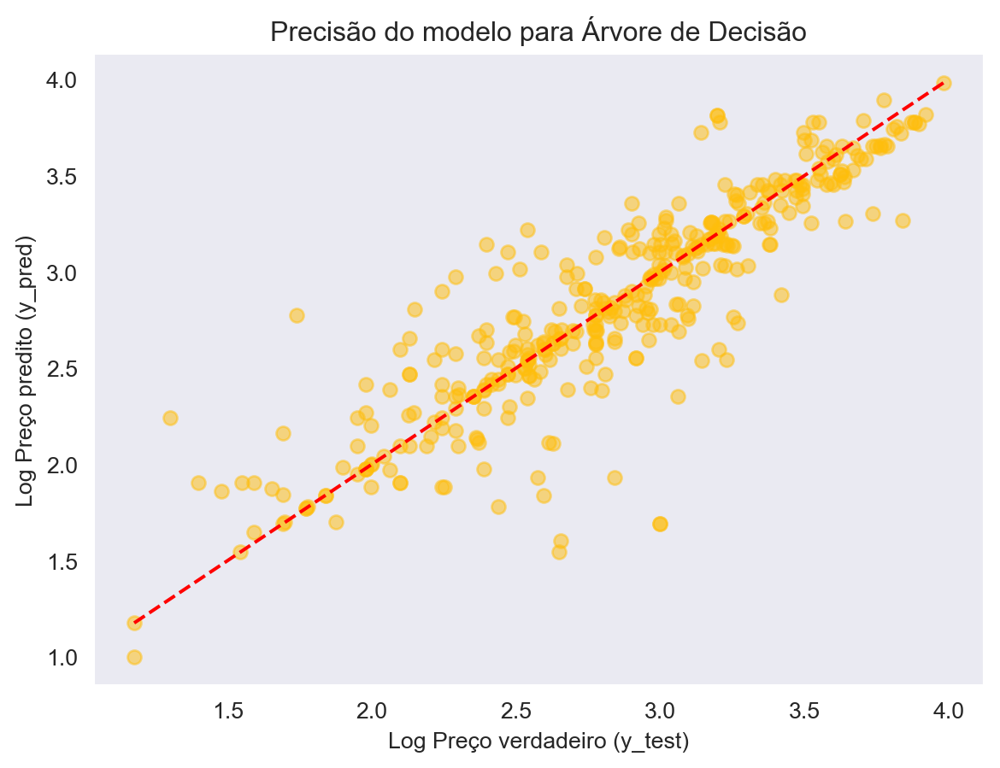
vamos criar um dataframe com os indicadores para compará-los com os outros modelos.
indicadores = pd.DataFrame({
'R2':[r2_tree],
'MSE':[mse_tree],
'RMSE':[rmse_tree],
'Modelo':['Decision Tree']
})
indicadores| R2 | MSE | RMSE | Modelo | |
|---|---|---|---|---|
| 0 | 0.763251 | 0.074327 | 0.272629 | Decision Tree |
Random Forests
Agora vamos treinar um modelo de RF.
from sklearn.ensemble import RandomForestRegressorrf_model = RandomForestRegressor(random_state=42)
rf_model.fit(X_train, y_train)RandomForestRegressor(random_state=42)In a Jupyter environment, please rerun this cell to show the HTML representation or trust the notebook.
On GitHub, the HTML representation is unable to render, please try loading this page with nbviewer.org.
Parameters
Vamos calcular a precisão com os dados de teste.
y_pred_rf = rf_model.predict(X_test)
mse_rf = mean_squared_error(y_test, y_pred_rf)
r2_rf = r2_score(y_test, y_pred_rf)
rmse_rf = np.sqrt(mse_rf)
print(f'Random Forest Mean Squared Error: {mse_rf}')
print(f'Random Forest R-squared: {r2_rf}')
print(f'Random Forest RMSE: {rmse_rf}')Random Forest Mean Squared Error: 0.04606232341299665
Random Forest R-squared: 0.8532800822823342
Random Forest RMSE: 0.21462134892176188Novamente vamos fazer um gráfico para visualizar o desempenho do modelo RF.
plt.scatter(y_test, y_pred_rf, alpha=0.5)
plt.xlabel("Log Preço verdadeiro (y_test)")
plt.ylabel("Log Preço predito (y_pred)")
plt.title("Precisão do modelo para Random Forest")
# Addicionar linha diagonal
plt.plot([min(y_test), max(y_test)], [min(y_test), max(y_test)], color='red', linestyle='--')
plt.show()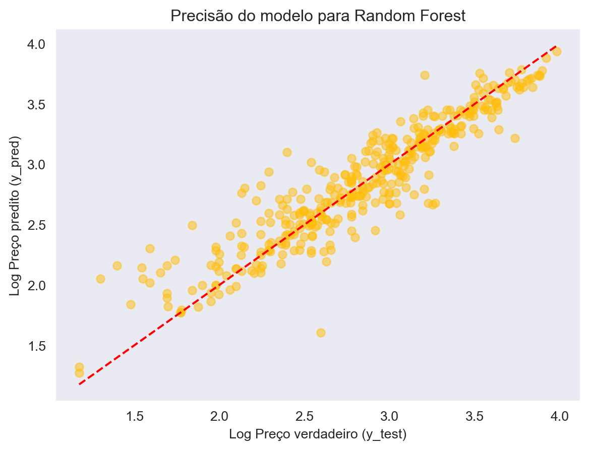
E vamos incluir os indicadores do RF no nosso dataframe indicadores.
rf_df = pd.DataFrame({
'R2':[r2_rf],
'MSE':[mse_rf],
'RMSE':[rmse_rf],
'Modelo':['Random Forest']
})
indicadores = pd.concat([indicadores, rf_df], ignore_index=True)
indicadores| R2 | MSE | RMSE | Modelo | |
|---|---|---|---|---|
| 0 | 0.763251 | 0.074327 | 0.272629 | Decision Tree |
| 1 | 0.853280 | 0.046062 | 0.214621 | Random Forest |
Support Vector Regression (SVR)
Primeiro precisamos normalizar os valores dos atributos.
from sklearn.preprocessing import StandardScaler
scaler = StandardScaler().fit(X_train)
X_train_scaled = scaler.transform(X_train)
X_test_scaled = scaler.transform(X_test)Agora vamos treinar um modelo SVR.
from sklearn.svm import SVRAgora podemos treinar o modelo. Têm três tipos de modelos SVR: ‘linear’ é como se fosse uma regressão linear; ‘poly’ é como se fosse uma regressão polinomial; ‘rbf’ uma regressão não-linear.
svr_model = SVR(kernel = 'rbf')
svr_model.fit(X_train, y_train)SVR()In a Jupyter environment, please rerun this cell to show the HTML representation or trust the notebook.
On GitHub, the HTML representation is unable to render, please try loading this page with nbviewer.org.
Parameters
Vamos calcular a precisão com os dados de teste.
y_pred_svr = svr_model.predict(X_test)
mse_svr = mean_squared_error(y_test, y_pred_svr)
r2_svr = r2_score(y_test, y_pred_svr)
rmse_svr = np.sqrt(mse_svr)
print(f'SVR Mean Squared Error: {mse_svr}')
print(f'SVR R-squared: {r2_svr}')
print(f'SVR RMSE: {rmse_svr}')SVR Mean Squared Error: 0.06872328577926948
SVR R-squared: 0.7810993000848698
SVR RMSE: 0.26215126507280007Novamente vamos fazer um gráfico para visualizar o desempenho do modelo SVR.
plt.scatter(y_test, y_pred_svr, alpha=0.5)
plt.xlabel("Log Preço verdadeiro (y_test)")
plt.ylabel("Log Preço predito (y_pred)")
plt.title("Precisão do modelo para Support Vector Regression")
# Addicionar linha diagonal
plt.plot([min(y_test), max(y_test)], [min(y_test), max(y_test)], color='red', linestyle='--')
plt.show()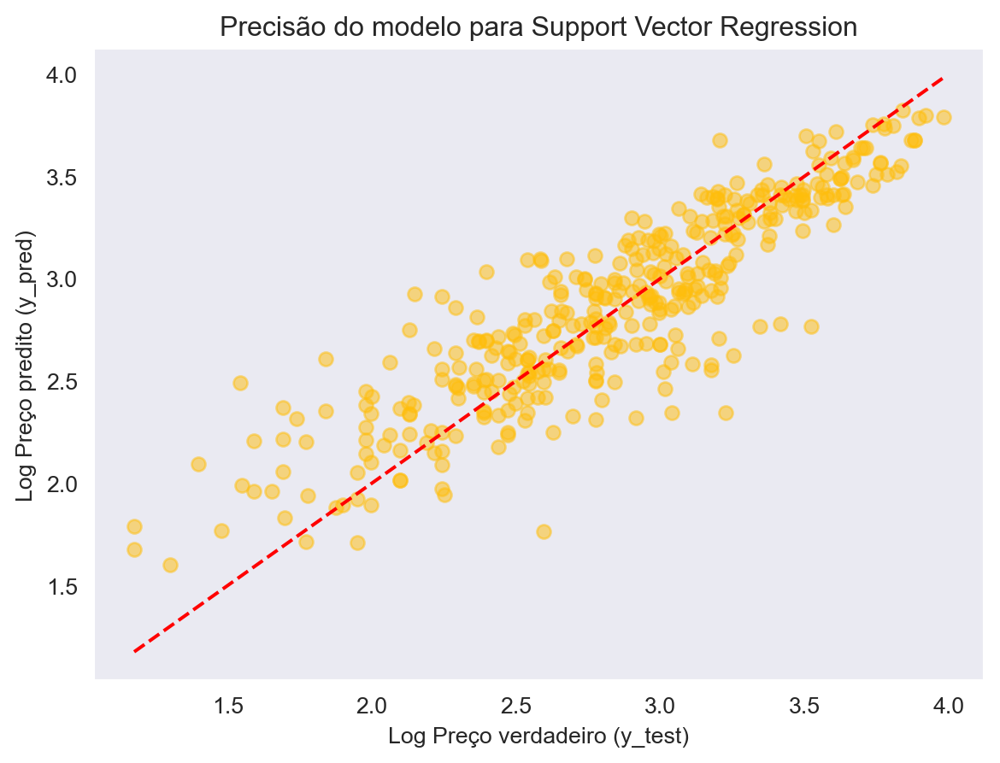
E vamos incluir os valores no nosso dataframe de indicadores.
new_row = pd.DataFrame({
'R2': [r2_svr],
'MSE': [mse_svr],
'RMSE':[rmse_svr],
'Modelo': ['SVR']
})
indicadores = pd.concat([indicadores, new_row], ignore_index=True)
indicadores| R2 | MSE | RMSE | Modelo | |
|---|---|---|---|---|
| 0 | 0.763251 | 0.074327 | 0.272629 | Decision Tree |
| 1 | 0.853280 | 0.046062 | 0.214621 | Random Forest |
| 2 | 0.781099 | 0.068723 | 0.262151 | SVR |
Gráfico comparativo
fig = sns.scatterplot(data=indicadores, x='R2', y='RMSE', hue='Modelo', s=100,style='Modelo')
fig.set_xlim(0.5, 1)
fig.set_ylim(0,1)
plt.title('Gráfico comparativo entre os indicadores RMSE x R2')
plt.show()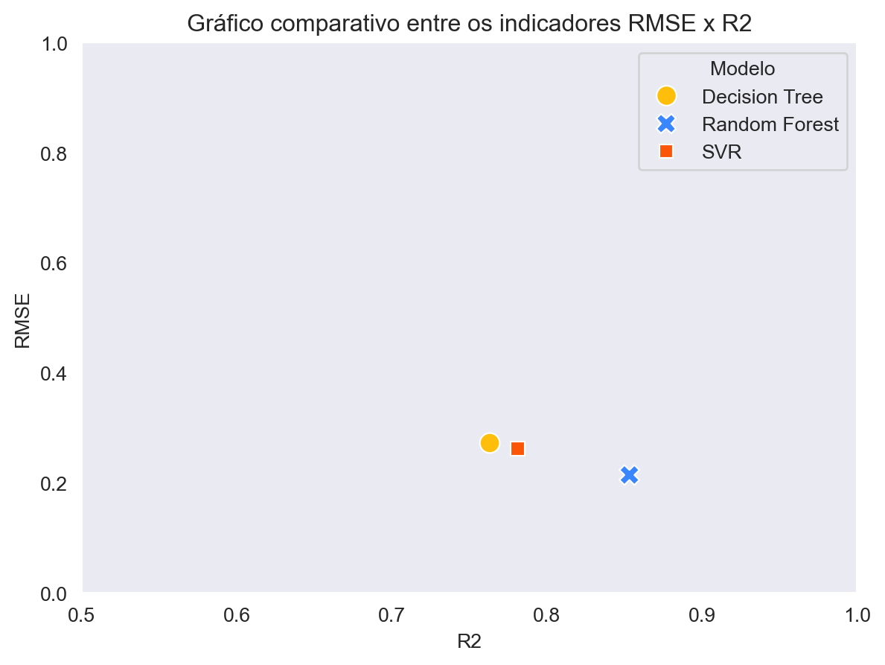